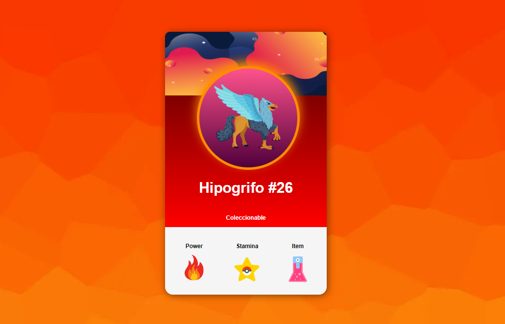
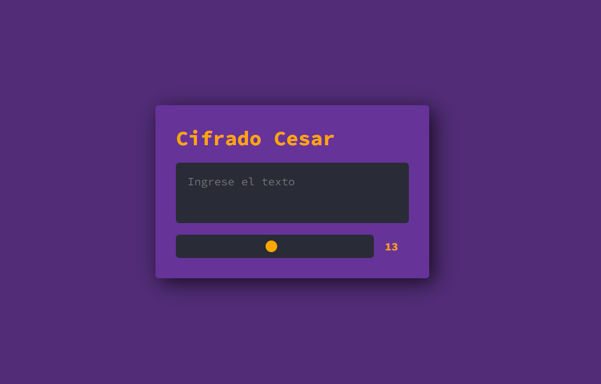
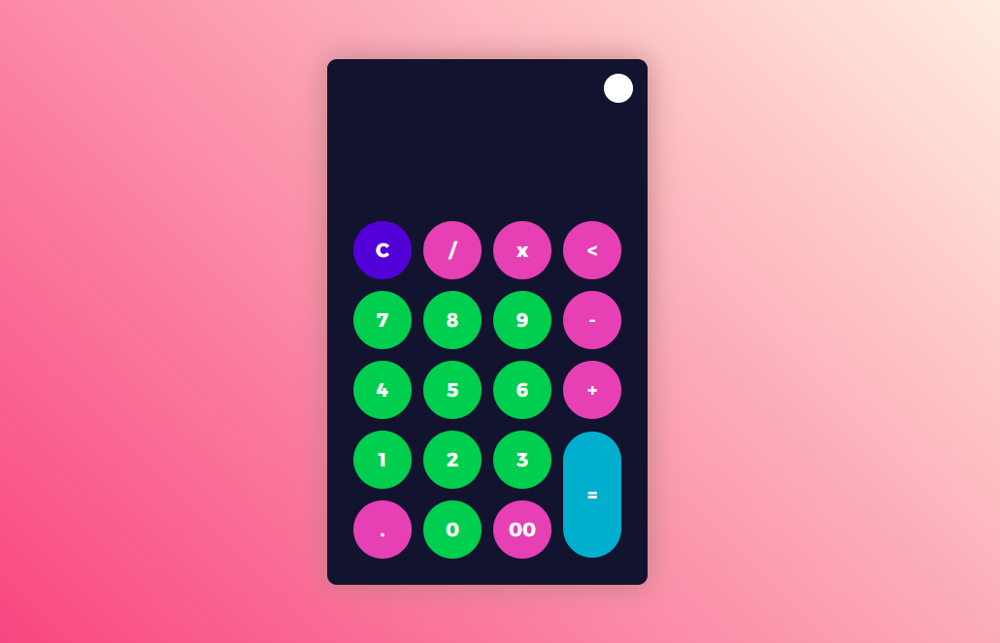

Hola, mi nombre es Pablo y soy programador, aqui hay algunos ejercicos que he codificado

haciendo esta "carta" reforcé conocimientos generales de html y css, además de aprender sobre el uso de transiciones.

se dice que Julio César utilizaba este cifrado por sustitución con sus guardias. se reemplaza una letra del abecedario por otra X espacios más adelante.

presionando el botón de la esquina superior derecha esta calculadora totalmente funcional cambia de modo oscuro a modo claro.